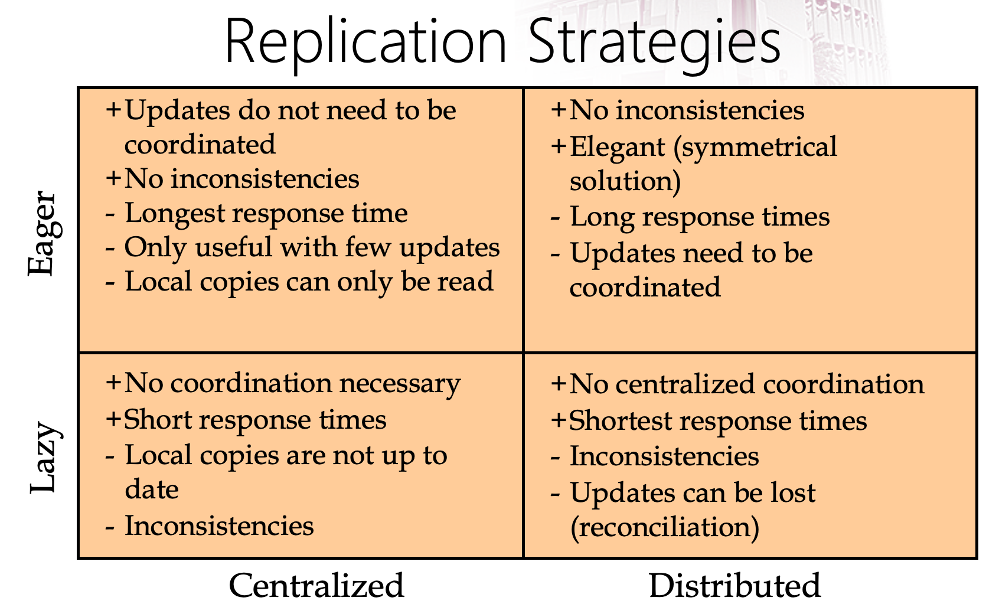
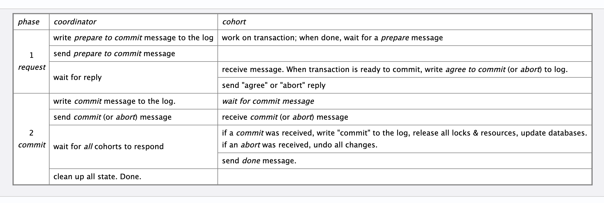
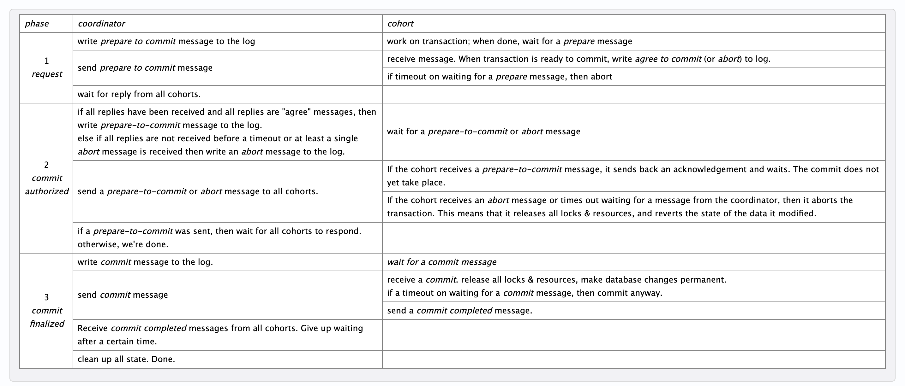

2PC, 3PC and Raft
分布式数据库事务处理协议：2PC, 3PC以及raft算法的学习总结。
Distributed Systems
分布式系统意味着，事务不仅仅在一个系统/数据库执行，而是多个。此处注意，多个系统可能在同一网络环境下，
也可能在多网络环境。结合实际来看，更需要注意的情况是在多网络环境下，也就是存在所谓的network partition.
此处建议温习一下CAP原则，不过不是必须。
分布式数据库下，事务的难点：
- machine crash
- network failure
2PC，3PC乃至于raft都属于一类协议：基于共识(consensus)的协议。本文主要介绍这三种协议。
在介绍之前，我认为有一个很重要的概念需要先理清楚。到底什么是consistency？分布式数据库下，consistency又应该
从哪些方向理解与分类？顺好这个逻辑，才能自然而然地理解这些协议的设计思路，而不是复读机一样的背概念。
Consistency of ReplicatedDatabases
分布式数据库中，数据分为两部分：需要复制的(replicated)和不需要复制的。对于不需要复制的数据的事务，叫做local transaction；对于需要复制的数据部分的事务，叫global transaction。local transaction不需要担心，重点是global。
一般来讲，global transaction的处理方式，可以通过不同的维度来分类。今天我们先谈其中两个：
Where to initiate an update?
也就是说，一个update事务发生的时候，首先发生在哪里？一般有两种选择：
- Centralized: single master or primary copy. 也就是必须首先发生在master数据库上
- Distributed: any replica. 可以发生在任一数据库上
OK，不论你首先发生在哪里，在这个事务执行的时候，我们应该在什么时候更新其他的数据库？How to propogate an update?
- Eager: 当这个（主）事务完成的时候，不仅仅这个数据库，整个系统的数据都update了。这里有一点nested transaction的感觉，起始事务中包含了更新其他数据库的子事务。
- Lazy：这个事务完成了，ok，之后慢慢更新其他事务。也就是当前数据库commit之后，其他的数据库并没有都update。
注意，这两个维度之间没有什么必然联系。放张图方便理解：

现在可以理解consistency了。此处的consistency更准确点应该叫做mutally consistency。定义如下[1]：
A replicated database is said to be in a mutually consistent state if all the replicas of each of its data items have identical values.
那么strong consistency可以理解为在任意一个时间点，都保证所有replica上同一数据item值一样（CAP中的C）。下文中讲的2PC就是一种保证强一致的方法。
而weak consistency指系统最终可以达到mutually consistency，又称eventually consistency。
上面和我们之前学的transaction consistency不同。事务一致性指的是事务执行前后保证遵循数据的所有constriants。
2PC-Two Phase Commit Protocol
下图以及后面一张图取自于[2].

记忆要点：
- 不论是coordinator还是participant，先写write-ahead log再做操作
- 一阶段前所有participant都先执行事务，后续的两阶段只是决定是否commit而已。
- 一阶段投票，participants们都同意，那就commit；只要有一个abort，那就都abort
- 二阶段participant commit之后返还ack让coordinator知道
性质：
- 2PC属于strong consistency的一种实现方式
- 假设
- 会写log
- machine can recover
- network(communication) can recover
- 阻塞
缺点：
- 由于coordinator总要阻塞等待participant的回复，所以response time较长，性能较低
- 分不清network failure和machine crash
- 如果系统中出现了crash，整个系统阻塞等待recover
- 在第二阶段，当一个participant接收到投票结果(commit or abort)的时候，它并不知道其他participant是否收到投票的结果
崩溃处理：
- coordinator崩了，等待重启或者将一个participant变为coordinator(不一定每次都能及时重启，实际上这个很常用)，读log，进行后续操作
- participant崩了，等待重启，读log，后续操作
然而，2PC最大的设计缺陷在于，如果采用换新的coordinator的处理方案，新coordinator没法读原来coordinator写的log，所以必须问所有的participant一阶段结果是什么，然后再继续。那么，万一coordinator和任意一个participant崩了，这个情况系统处理不了了，新coordinator永远无法得知一阶段的结果是什么，只能等participant重启（回看一下缺点的最后一项）。而且，你还没办法无脑让所有participant都abort，因为有的participant可能已经commit了。所以这时候，系统中所有机器全部blocking住，哪怕是成功commit的机器（你不block住就保证不了强一致，保证不了强一致还用你2PC干啥）
精简一下：
2PC缺陷：
- 只要系统失败（出现上述解决不了的情况），整个系统全部需要recover，由于其blocking性质
- 因为participant不知道其他participant的状态，所以新coordinator必须遍历所有的participant才能知道。
3PC
记忆要点：
- 比起2PC多出来的，是告诉所有participant一阶段的投票结果
- 当coordinator崩溃后，新coordinator不需要遍历所有participant，任选一个正常的participant问一下就知道一阶段投票结果
- 在每个阶段加入timeout，如果过时自动abort

coordinator崩溃处理：
- 换新coordinator
- query任一正常participant：
- 没有收到2阶段的prepare
- 无participants commit过，可能有部分agree过
- 可以abort整个事务，或者重启
- 收到了2阶段的prepare，但没有commit->
- 可能有participant已经commit过，并且全部都agree to commit
- 全体重发prepare，等所有人回复之后发送commit指令
- committed ->
- 可能有participant已经commit过，并且全部都prepare to commit了
- 全体重发commit
- 没有收到2阶段的prepare
3PC缺点：
- 至少需要3次round trip，RTT太长，latency太大
- 在network partition并且可能有网络故障（CAP中的P）情况下，由于其timeout机制，在某种recover情况下，会出现inconsistent的问题（见reference [3]中第33，34页）
Raft
Raft算法的流程，个人就不复述了，don’t reinvent the wheel:) 请查看第三个引用
说一下算法的背景和解决的问题吧，有助于从实践的角度理解该算法。请仔细阅读Raft官网中的这段话：
Consensus typically arises in the context of replicated state machines, a general approach to building fault-tolerant systems. Each server has a state machine and a log. The state machine is the component that we want to make fault-tolerant, such as a hash table. It will appear to clients that they are interacting with a single, reliable state machine, even if a minority of the servers in the cluster fail. Each state machine takes as input commands from its log. In our hash table example, the log would include commands like set x to 3. A consensus algorithm is used to agree on the commands in the servers’ logs. The consensus algorithm must ensure that if any state machine applies set x to 3 as the nth command, no other state machine will ever apply a different nth command. As a result, each state machine processes the same series of commands and thus produces the same series of results and arrives at the same series of states.
解决了分布式系统中的consensus问题 -> 任何一个command在所有的state machine上都于相同的次序n出现
reference
- Özsu, M. Tamer, and Patrick Valduriez. Principles of distributed database systems. Vol. 2. Englewood Cliffs: Prentice Hall, 1999.
- https://www.cs.rutgers.edu/~pxk/417/notes/content/transactions.html
- https://www.cs.rutgers.edu/~pxk/417/notes/pdf/14-transactions-slides.pdf